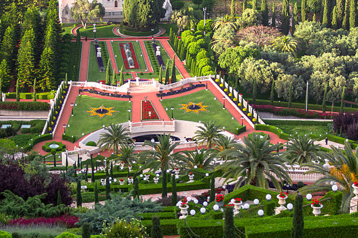
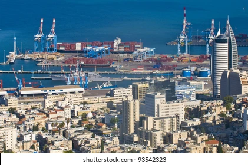
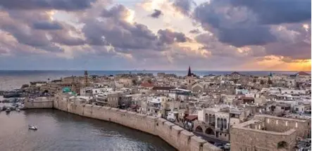

Ciudad de Haifa
- Haifa es una ciudad costera situada en el norte y conocida por su impresionante ubicación en las laderas del Monte Carmelo.
- Sus playas amplias y limpias atraen a muchos visitantes que buscan sol, mar y tranquilidad.
- El paseo marítimo ofrece restaurantes, cafés y espacios ideales para caminar junto al mar.
- La combinación de montañas, costa y vistas panorámicas hace de Haifa un destino único en el Mediterráneo.

bahahi jardin

mar del haifa
ciudad de acre
- Acre es una ciudad histórica situada en la costa norte, conocida por su impresionante muralla antigua.
- Sus callejones estrechos y mercados tradicionales muestran la riqueza cultural de la ciudad.
- El puerto de Acre ofrece vistas hermosas y refleja su importancia marítima a lo largo de los siglos.
- La mezcla de arquitectura cruzada, otomana y árabe convierte a Acre en un destino único y lleno de historia.

Muros de Acre

Acre de arriba
plan del viaje
Dia 1: llegada a hifa y seguridad en hotel
Dia 2: ir a al bahhai jardin yLa oración allí, caminar por los patios de la jardin y despus ir al mar y disfruta en la playa
Dia 3:ir al acre y disfrutar en muros de acre y comer de comer del acre es dilciosa, y caminar en la barrio del viyejo.